ANSIC <<
Previous Next >> 練習一
ex1
計算球體的體積
#include <stdio.h> // Include the standard input/output header file.
float myradius; /* radius of the sphere */
float myvolume; /* volume of the sphere (to be computed) */
char line_text[50]; /* a line from the keyboard */
/* 圓周率pi的值，保留50位小數，來自維基百科 */
const float PI = 3.14159265358979323846264338327950288419716939937510;
int main() {
printf("Input the radius of the sphere : "); // Prompt the user to input the radius of the sphere.
fgets(line_text, sizeof(line_text), stdin); // Read a line of input from the user and store it in 'line_text'.
sscanf(line_text, "%f", &myradius); // Convert the input from 'line_text' to a float and store it in 'myradius'.
myvolume = (4.0 / 3.0) * PI * (myradius * myradius * myradius); /* Calculate the volume of the sphere using the formula. */
printf("The volume of sphere is %f.\n", myvolume); // Print the calculated volume of the sphere.
return(0); // Return 0 to indicate successful execution of the program.
}
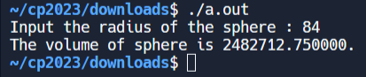
求任意數的平方
#include <stdio.h>
double square(double num)
{
return (num * num);
}
int main()
{
int num;
double n;
printf("\n\n Function : find square of any number :\n");
printf("------------------------------------------------\n");
printf("Input any number for square : ");
scanf("%d", &num);
n = square(num);
printf("The square of %d is : %.2f\n", num, n);
return 0;
}
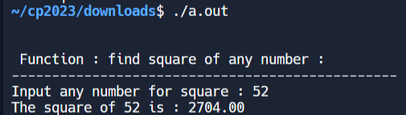
計算從 1 到 n 的數位之和
#include<stdio.h>
int sumOfRange(int);
int main()
{
int n1;
int sum;
printf("\n\n Recursion : calculate the sum of numbers from 1 to n :\n");
printf("-----------------------------------------------------------\n");
printf(" Input the last number of the range starting from 1 : ");
scanf("%d", &n1);
sum = sumOfRange(n1);
printf("\n The sum of numbers from 1 to %d : %d\n\n", n1, sum);
return (0);
}
int sumOfRange(int n1)
{
int res;
if (n1 == 1)
{
return (1);
} else
{
res = n1 + sumOfRange(n1 - 1); //calling the function sumOfRange itself
}
return (res);
}
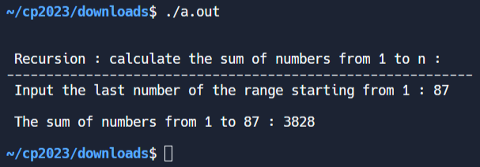
簡單計算
#include <stdio.h> // Include the standard input/output header file.
void main() {
int num1,num2,opt; // Declare variables to store user input and operation choice.
// Prompt user for two integers and store them.
printf("Enter the first Integer :");
scanf("%d",&num1);
printf("Enter the second Integer :");
scanf("%d",&num2);
// Display the menu for operation choice.
printf("\nInput your option :\n");
printf("1-Addition.\n2-Substraction.\n3-Multiplication.\n4-Division.\n5-Exit.\n");
scanf("%d",&opt); // Read and store the user's choice.
switch(opt) { // Start a switch statement based on the user's choice.
case 1:
printf("The Addition of %d and %d is: %d\n",num1,num2,num1+num2); // Perform addition and print result.
break;
case 2:
printf("The Substraction of %d and %d is: %d\n",num1,num2,num1-num2); // Perform subtraction and print result.
break;
case 3:
printf("The Multiplication of %d and %d is: %d\n",num1,num2,num1*num2); // Perform multiplication and print result.
break;
case 4:
if(num2==0) {
printf("The second integer is zero. Divide by zero.\n"); // Handle division by zero.
} else {
printf("The Division of %d and %d is : %d\n",num1,num2,num1/num2); // Perform division and print result.
}
break;
case 5:
break; // Exit the program.
default:
printf("Input correct option\n"); // Display error message for invalid input.
break;
}
}
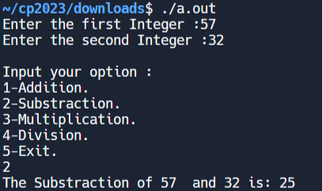
檢查三角形
#include <stdio.h> // Include the standard input/output header file.
int main()
{
int sidea, sideb, sidec; // Declare variables for the sides of the triangle.
/*
* Reads all sides of a triangle
*/
printf("Input three sides of triangle: "); // Prompt user for input.
scanf("%d %d %d", &sidea, &sideb, &sidec); // Read and store the sides of the triangle.
if(sidea==sideb && sideb==sidec) // Check if all sides are equal.
{
printf("This is an equilateral triangle.\n"); // Print message for equilateral triangle.
}
else if(sidea==sideb || sidea==sidec || sideb==sidec) // Check if two sides are equal.
{
printf("This is an isosceles triangle.\n"); // Print message for isosceles triangle.
}
else // If no sides are equal.
{
printf("This is a scalene triangle.\n"); // Print message for scalene triangle.
}
return 0;
}
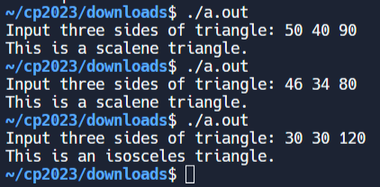
檢查給定年份是否為閏年
#include <stdio.h> // Include the standard input/output header file.
void main()
{
int chk_year; // Declare an integer variable 'chk_year'.
printf("Input a year :"); // Prompt the user to input a year.
scanf("%d", &chk_year); // Read and store the user's input in 'chk_year'.
if ((chk_year % 400) == 0) // Check if 'chk_year' is divisible by 400 with no remainder.
printf("%d is a leap year.\n", chk_year); // Print a message indicating that 'chk_year' is a leap year.
else if ((chk_year % 100) == 0) // Check if 'chk_year' is divisible by 100 with no remainder.
printf("%d is not a leap year.\n", chk_year); // Print a message indicating that 'chk_year' is not a leap year.
else if ((chk_year % 4) == 0) // Check if 'chk_year' is divisible by 4 with no remainder.
printf("%d is a leap year.\n", chk_year); // Print a message indicating that 'chk_year' is a leap year.
else
printf("%d is not a leap year \n", chk_year); // Print a message indicating that 'chk_year' is not a leap year.
}
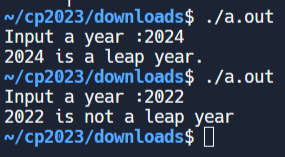
現在時間
#include <time.h>
#include <stdio.h>
#include <stdlib.h>
int main(void)
{
time_t cur_time;
char* cur_t_string;
cur_time = time(NULL);
if (cur_time == ((time_t)-1))
{
(void) fprintf(stderr, "Failure to get the current date and time.\n");
exit(EXIT_FAILURE);
}
cur_t_string = ctime(&cur_time); //convert to local time format
if (cur_t_string == NULL)
{
(void) fprintf(stderr, "Failure to convert the current date and time.\n");
exit(EXIT_FAILURE);
}
(void) printf("\n The Current time is : %s \n", cur_t_string);
exit(EXIT_SUCCESS);
}
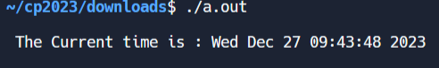
這個月過了幾秒
#include <stdio.h>
#include <time.h>
int main(void)
{
time_t now;
time(&now);
struct tm beg_month;
beg_month = *localtime(&now);
beg_month.tm_hour = 0;
beg_month.tm_min = 0;
beg_month.tm_sec = 0;
beg_month.tm_mday = 1;
double seconds = difftime(now, mktime(&beg_month));
printf("\n %.f seconds passed since the beginning of the month.\n\n", seconds);
return 0;
}
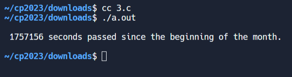
反向整數
#include <stdio.h>
int reverse(int n) {
int d, y = 0;
while (n) {
d = n % 10;
if ((n > 0 && y > (0x7fffffff - d) / 10) ||
(n < 0 && y < ((signed)0x80000000 - d) / 10)) {
return 0;
}
y = y * 10 + d;
n = n / 10;
}
return y;
}
int main(void)
{
int i = 123;
printf("Original integer: %d ",i);
printf("\nReverse integer: %d ",reverse(i));
i = 208478933;
printf("\nOriginal integer: %d ",i);
printf("\nReverse integer: %d ",reverse(i));
i = -73634;
printf("\nOriginal integer: %d ",i);
printf("\nReverse integer: %d ",reverse(i));
return 0;
}
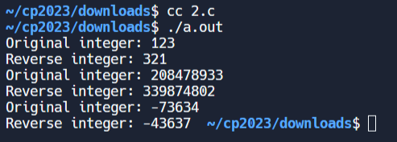
列出所有質因數
#include <stdio.h>
#include <stdlib.h>
#include <math.h>
int main(void)
{
//int n = 8;
int n = 84651;
// int n = 18;
printf("All prime factors of %d are: ",n);
if (n>0)
{
while (n%2==0)
{
printf("2 ");
n /= 2;
}
for (int i = 3; i <= sqrt(n); i+= 2)
{
while (n%i == 0)
{
printf("%d ",i);
n /= i;
}
}
if (n > 2)
printf("%d ",n);
}
return 0;
}
 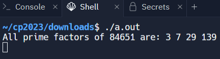
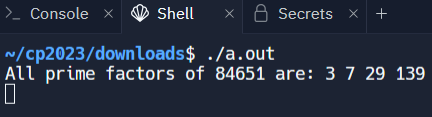
ANSIC <<
Previous Next >> 練習一